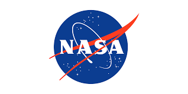

What is NASA?
NASA, the National Aeronautics and Space Administration, is the U.S. government agency responsible for the nation's civilian space program and for aeronautics research. Founded in 1958, NASA’s mission is to drive innovation in space exploration, scientific discovery, and technological advancement. The agency conducts groundbreaking research in aeronautics, robotic space missions, and human space exploration. Through its space missions, NASA has made significant contributions to our understanding of space and our planet. NASA's Mercury program marked the beginning of human space exploration, sending the first Americans into space. The Gemini program followed, preparing astronauts for the complex missions that would culminate in landing on the Moon. The Apollo program achieved the historic first Moon landing in 1969, a defining moment in space history. The Space Shuttle program later revolutionized spaceflight, allowing reusable spacecraft to transport astronauts and cargo to low Earth orbit and beyond.

NASA Spaceflight Today
NASA's current and future missions focus on advancing our understanding of space, Earth, and the potential for life beyond our planet. Ongoing projects include the Artemis program, which aims to return astronauts to the Moon and establish a sustainable human presence by the end of the decade. NASA is also working on the Mars Sample Return mission, which will collect samples from Mars and bring them back to Earth for analysis, helping scientists search for signs of past life. Additionally, tescopes such as the James Webb Space Telescope or Chandra X-ray Observatory continues to provide unprecedented views of the universe, exploring distant galaxies and the formation of stars and planets.
Looking toward the future, NASA plans to send crewed missions to Mars, with the goal of landing on the Red Planet in the 2030s. The agency is also investigating asteroids and other celestial bodies to learn more about the solar system's formation and its potential resources. NASA's continued collaboration with international partners, such as the European Space Agency, will expand humanity's reach into deep space. These missions represent a bold vision for space exploration, aiming to answer fundamental questions about our place in the universe.